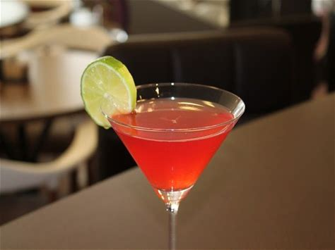
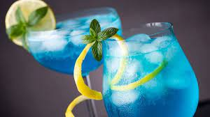
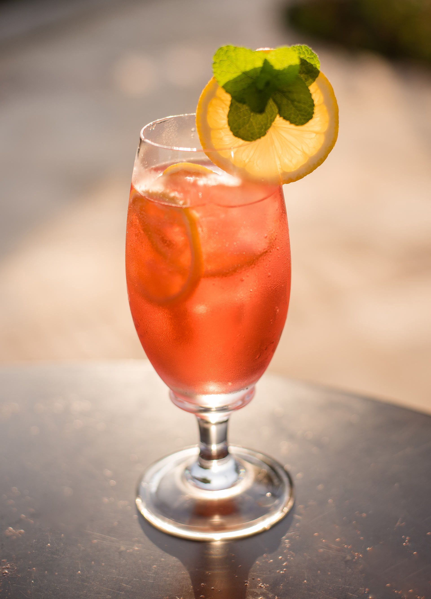

Receitas de Drinks
Drinks são bebidas que combinam ingredientes como álcool, sucos, refrigerantes, frutas e especiarias. Eles podem ser preparados em diversos estilos e são servidos em ocasiões sociais ou para relaxar. Os drinks oferecem uma variedade de sabores e permitem experimentar diferentes culturas culinárias.

Drink Caipirinha
Ingredientes:
- 1 limão tahiti cortado em cubos com casca;
- 2 colheres de sopa de açúcar;
- 60ml de cachaça;
- cubos de gelo;
- rodelas de limão para decorar (opcional).
Modo de Preparo:
Em um copo baixo, coloque o limão coratado em cubos e o açucar. Com um pilão amasse bem o limão e o açúcar até que o limão solte todo o seu suco. Adicione a cachaça e misture bem. Adcione o gelo até encher o copo. Misture novamente
Decore com rodelas de limão, se desejar. Sirva.
Drink Cosmopolitan
**descrição da receita**
Drink Azul
**descrição da receita**
Drink Malibu
**descrição da receita**